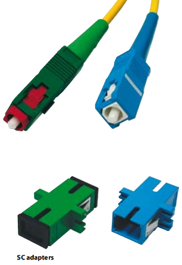

SC standard
- Connector with push - pull mechanism.
- Available in the miniature version.
- Available in duplex version.
- For applications in the telecommunication networks.
- Standard connector in the transmission networks
of the largest telecommunication operators.
- According to norm JIS C5973, NNT, IEC, TIA, Bellcore.
Connectors
- Remarkable eccentricity of the hole thanks to the precision
by production of the ferrule. Hole diameter tolerance from
0 to + 1 µm.
- Zirconium ferrule ensures very good resistance at the
changing temperatures (operating temperature range
from -40 °C to +85 °C).
- Assembly of the ferrule by using adhesive protects the
fibres against impact strength.
- Machine polishing procedure ensures high quality
of end face geometry and high repeatable performance.
- Each connector is adjustable; that ensures outstanding
transmission parameter.
- End face geometry is controlled with an interferometer.
Adaptors
- Adapters have a zirconium sleeve for single-mode
applications.
- Adapters have a zirconium sleeve for multi-mode
applications.
- Adapter’s sleeve is manufactured from zirconium dioxide,
enabling high precision of the connection and high repeatable
performance.
Connection type
- The Push - Pull mechanism protects the ferrule before
twisting, which guarantees a full protection of the ferrule
and connection stability.
Connector type
- Single mode and multimode connectors.
- Following cables can be equipped with this connector
type: 900 um tube or PVC cables with the following
diameters: 1.7; 2.0; 2.4 and 2.8 mm.
- Possible polishing procedures: SuperPC, UltraPC
and AnglePC.
Application
- Telecommunication, external and access networks.
- WDM networks.
- LAN/WAN networks.
- CATV networks.
